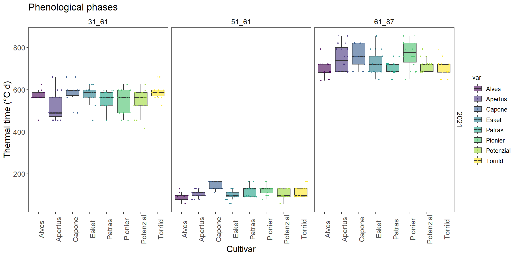

df <- data.frame(time=as.Date("2023-04-16",format="%Y-%m-%d")+seq(1,3,1),
temp=c(20,15,13),
thermal_time=cumsum(c(20,15,13)))
df %>% dplyr::glimpse()
names(df)
# extract column from dataframe
df$thermal_time
df[,3]
df[,'thermal_time']
df[['thermal_time']]
# not work
df[thermal_time]
# different error message
#!! name space conflict
df[time]
time
# summarize dataframe
lapply(df, range)
# turn as data frame
lapply(df, range) %>% data.frame()
summary(df)Week3: Spikelet development
R-basic
Welcome to the third course! You will learn ggplot and dataframe wrangling:
Learning goals
- data frame wrangling
- ggplot2
0.1 practice dataframe with real data
Note
Practice with large data set ear_summarized.csv in folder data.
- read the file with relative path using function
read.csv(). - find the row and column number of data frame by
rownandcoln - check the range of each column using
lapply, how many unique days exist in columndate - compare the result of
glimpseandstr - extract column
weightusing[],[[]]and$1 - what is the function of
head()andtail()? - how to extract the first three row using
[]?
1 You can subset dataframe by indexing [row,column] dataframe[,column] select the whole role for selected columnn dataframe[row,] select the whole column of selected rows # {r,eval=FALSE} # data <- read.csv("data/ear_summarized.csv") #
1 dplyr
1.1 Subset row(s)
dplyr::filter(): extract row where the condition matched. 2
2 r_package::function_name specify the function name by package name.:: has similar meaning like “from”. It is useful to avoid name space conflict when same function name is used by multiple library that you are using.
e.g., extract temp where time is 2023-04-17 in df.
# df$time %>% str()
df %>% dplyr::filter(time=='2023-04-17') %>% .$temp
df %>% dplyr::filter(time==as.Date('2023-04-17')) %>% .$temp1.2 Add column(s)
dplyr::mutate(): add one or multiple columns to dataframe.
e.g., add columnYear to df, its value is '2023'.
# result is not save
df %>% dplyr::mutate(Year="2023")
df
# result is saved
df$Year <- "2023"
df[['Year']] <- "2023"
df
Note
How to save result using %>%? Check example with ?mutate.
1.3 Combine dataframes by column.
df <- data.frame(time=as.Date("2023-04-16",format="%Y-%m-%d")+seq(1,3,1),
temp=c(20,15,13),
thermal_time=cumsum(c(20,15,13)))
# with same length dataframe
ear_df <- data.frame(time=as.Date("2023-04-16",format="%Y-%m-%d")+seq(1,3,1),
ear_weight=c(20,40,50))
merge(df,ear_df,by="time")
dplyr::left_join(df,ear_df,by="time")
# combind with vector of same length
cbind(df, ear_weight=c(20,40,50))
df$ear_weight <- c(20,40)
# with differnt length
short_ear_df <- data.frame(time=as.Date("2023-04-16",format="%Y-%m-%d")+seq(1,2,1),
ear_weight=c(20,40))
merge(df,short_ear_df,by="time")
dplyr::left_join(df,short_ear_df,by="time")
# combind with vector of different length
cbind(df, ear_weight=c(20,40))
df$ear_weight <- c(20,40)
Note
Check description of merge and left_join, how are they different from each other? What happen if you remove the argument by?
Note
go to HU-box download phenology_short.csvand put it in folder data. read this file using read.csv with relative path and named it as phenology
2 GGplot2
2.1 ggplot grammar: layer-wise commands


Top layer ggplot()and sub-layers sublayer commands 3, they are separated by +.
3 see function reference for more!
Within each layer, there may be an aesthetic function aes() to set aesthetic setting like x,y and color,fill or shape. Function ggplot() will not generate any graph but used for setting common aesthetic setting across the sub-layer. Plot type are specify in sub-layer with prefix geom_xx.
order matters!
If there are conflicts between the sub-layer commands, the latter will overwrite the previous one!
2.2 Requirements of scientific plot.
axis title: specify with unit if there is any using
xlab()orylab().legend title: full name instead of default abbreviation using
guides().other important rules: 4.
# Watch out the names!
library(ggplot)
library(ggplot2)data %>%
ggplot(aes(x=date,y=weight,color=var))+
geom_point()+
geom_line(aes(group=group))+ # link the point by group.
xlab("date of harvest")+ #x axis title
ylab("ear weight(g)")+ #y axis title
guides(color=guide_legend(title="Cultivar")) #change legend title 
challenge : use
theme_xx() function series to change background of the plot. Click for example.

2.3 facet: organized subplot by column
There are two commonly used functionfacet_grid and facet_wrap. In side each function, subplots are arranged in the manner of (row ~ column). There could be multiple column names put in the row or column position.
phenology %>%
ggplot(.,aes(x=var,y=value))+
geom_boxplot()+
facet_grid(Year~stage)
Make this graph more beautiful!
How to make each point show in box plot? (search for scatter points in boxplot ggplot2)
How does color and fill differs? Can you color it by var?
Could you apply another color scale using viridis package?
How to remove the background of the facet title with theme()? what does element_blank() do?
Follow up question, if you also apply theme_test() to it, it should be before or after theme()?
How to change title size? how does it related to element_text()
Could you change the axis title display angle as 90 degree?
How do you add title?

3 Recommendations
3.1 online tutorials:
3.2 online books:
ggplot cheatsheet Data visualization with R R for Data Science: Chapter3 Visualization